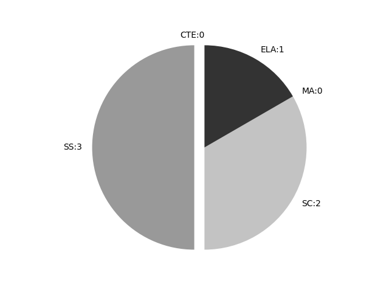

Montana
Report date: 2021-07-08
The frequency of all keywords found in this state's standards: 6
Comparable state score: 0.329 (median: .303, SD: .324)
The frequency above is the sum of all keywords found in all of this state's four core academic standards and the state's CTE/career standards. This total count is broken down by keyword and discipline area below.
On this site, 'comparable scores' are calculated as: keywords found divided by total words in the standards document(s) - multiplied by 100,000. The comparable scores attempt to normalize data, accounting for very different sizes of curriculum guidance documentation.
Frequencies by keyword or phrase:- spatial: 5
- geospatial: 1
- GIS: 0

Frequencies by discipline area: - SS: 3
Comp: 3.61 - SC: 2
Comp: 0.644 - MA: 0
Comp: 0.0 - ELA: 1
Comp: 0.129 - CTE: 0
Comp: 0.0
Review the standards document(s) used in this machine search: external link
Examples of keyword use by discipline area (and document): - ELA
- MCS-ELA-3rd.pdf, page:10, position:1182
believed, suspected, heard, wondered). L.3.6 Acquire and use accurately grade-appropriate conversational, general academic, and domain-specific words and phrases, including those that signal spatial and temporal relationships (e.g., After dinner t
- SC
- Montana-Science-Standard-Model-Curriculum-Guide-2016.pdf, page:11, position:975
billion-year-old history construct an explanation based on evidence for how geoscience processes have changed Earths surface at varying time scales and spatial scales analyze and interpret data on the d - Montana-Science-Standard-Model-Curriculum-Guide-2016.pdf, page:21, position:1091
for how geoscience processes have changed Earths surface at varying Earth and Space Sciences OPI IEFA Resources Science and Engineering Practices time scales and spatial scales analyze and interpret data on
- SS
- SS K12.pdf, page:11, position:1106
and geographic features have affected people and how people have affected the environment throughout Montana, the United States, and the world SS.G.6-8.5 explain the role and impact of spatial patterns of settlement and movement in shaping s - SS K12.pdf, page:14, position:1495
of monetary and fiscal policies in a variety of economic conditions. SS.G.9-12 The geography content standards for ninth through twelfth grade are that each student will SS.G.9-12.1 use geospatial reasoning to create maps to display and explain - SS K12.pdf, page:14, position:1558
conditions. SS.G.9-12 The geography content standards for ninth through twelfth grade are that each student will SS.G.9-12.1 use geospatial reasoning to create maps to display and explain the spatial patterns of cultural and environmental characteri
{kind=link}